- 克隆项目:
- 打开资源管理器(我的电脑/计算机), 进入规划好的某个目录中, 然后在空白处点击鼠标右键, 选择 TortoiseGit --> 克隆... (Clone...).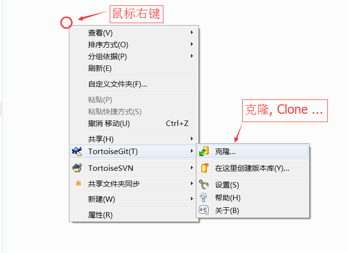
- 在弹出克隆项目对话框的 URL中输入项目地址,如:https://github.com/cncounter/LispGentleIntro.git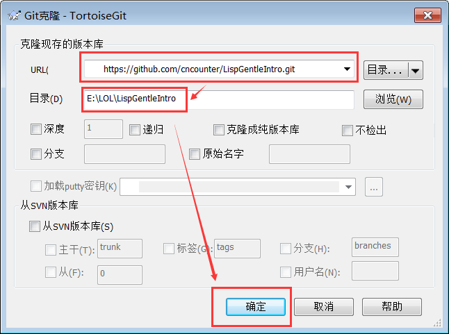
- 确定本地目录,然后点击 确定 按钮. 等待完成后,点击关闭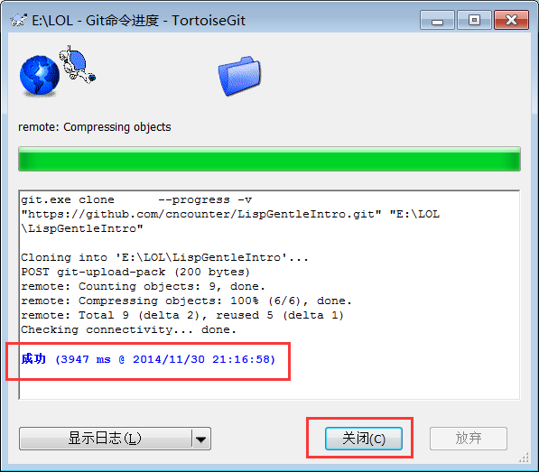
- 修改提交项目:
- 项目克隆完成后(可以将克隆 clone 理解为 下载, 检出 checkout 操作). 修改本地项目中的某些文件,如
将 README.md 修改为如下内容: LispGentleIntro =============== Lisp-符号计算入门指引翻译
<a href="http://cncounter.duapp.com/">天朝计数器</a>。还可以试试增加一些文件.
如 files.txt
- 然后在本地项目的空白处点击鼠标右键, 选择 TortoiseGit--> 提交(C)-> "master"... 或: Commit -> "master"....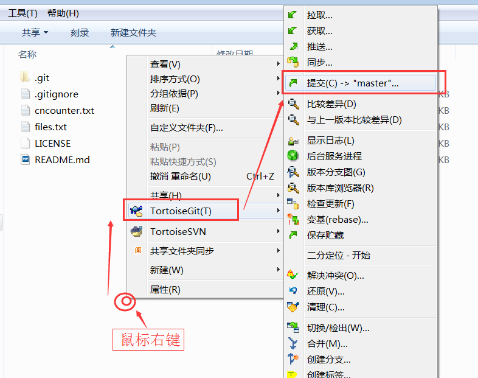
- 弹出提交（Commit）对话框:作为好习惯,填写提交日志,勾选需要提交的文件,然后点击 "确定" 按钮,
即提交到本地仓库.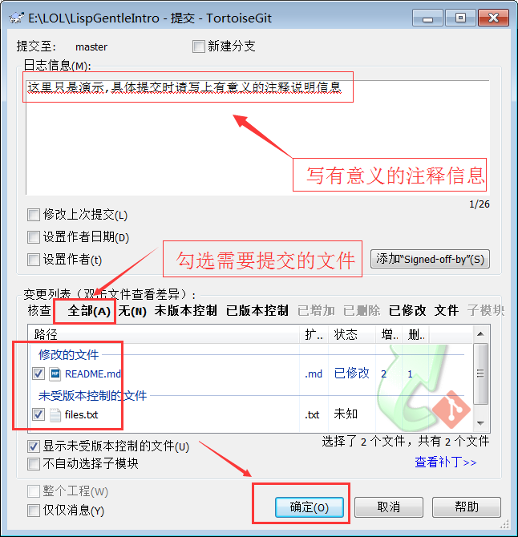
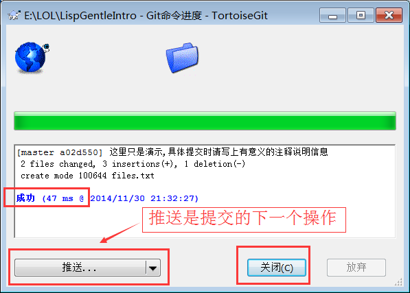
- 将提交到本地的项目推送到在线仓库：推送是提交的下一步操作.
- 本地项目的空白处点击鼠标右键, 选择 TortoiseGit --> 推送...或: Push...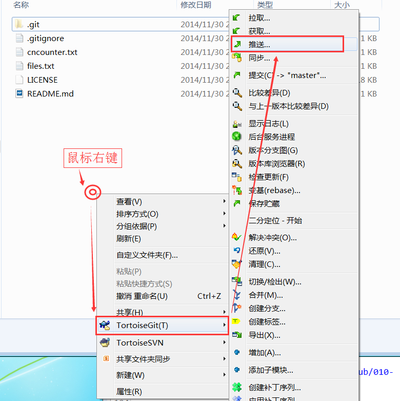
- 弹出推送(push)对话框:,一般保持默认,点击 按钮确定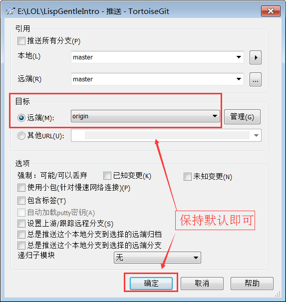
- 然后弹出推送进度界面, 可能要求你输入用户名:，然后点击确定(OK)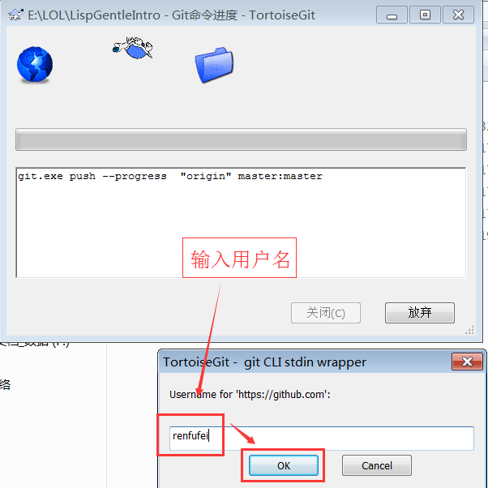
- 然后要求输入密码:密码输入正确后,，然后点击确定(OK)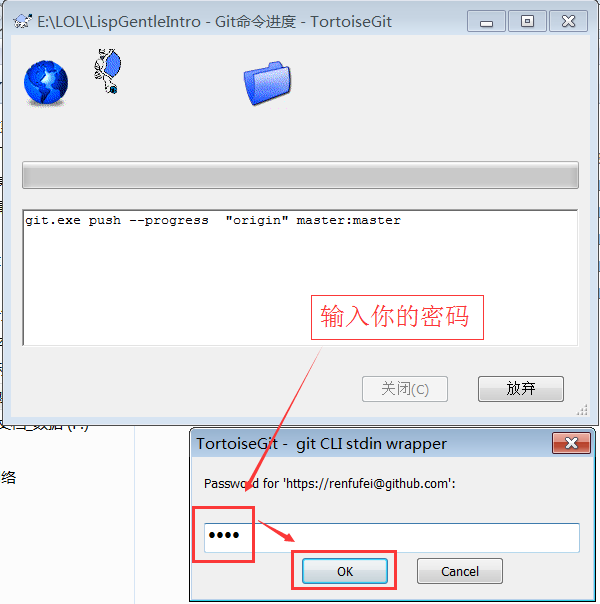
注： 如果你按照上一小节的设置操作,则输入密码以后会记住密码. 密码会明文保存在 C:\Users\Administrator\.git-credentials 这种文件中,
请小心使用.
- 显示推送成功界面: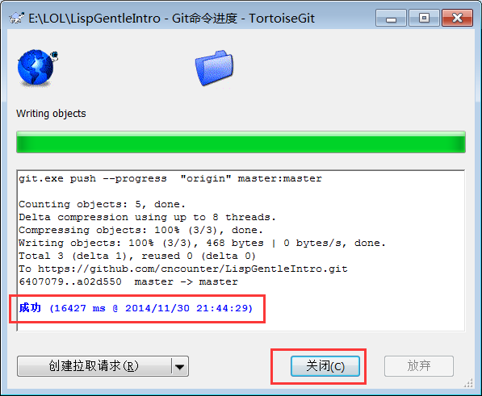
- 拉取项目(pull ...)：如果本地的项目没有在线仓库的新,则需要执行拉取操作(Pull ...).
- 在本地项目的空白处点击鼠标右键, 选择 TortoiseGit-->拉取... 或: Pull...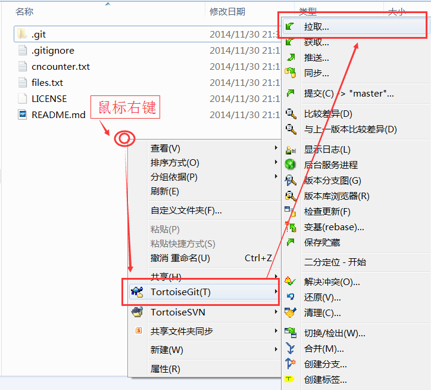
- 弹出拉取(pull)对话框:如果拉取有BUG，则可以勾选上变基(不报错就别勾选了!!!), 确定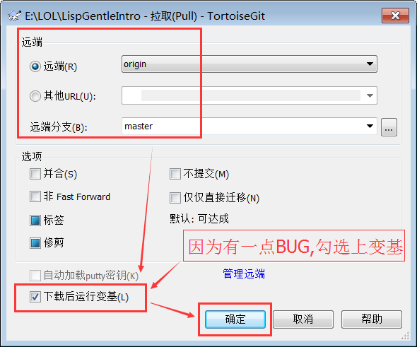
- 然后执行变基:点击开始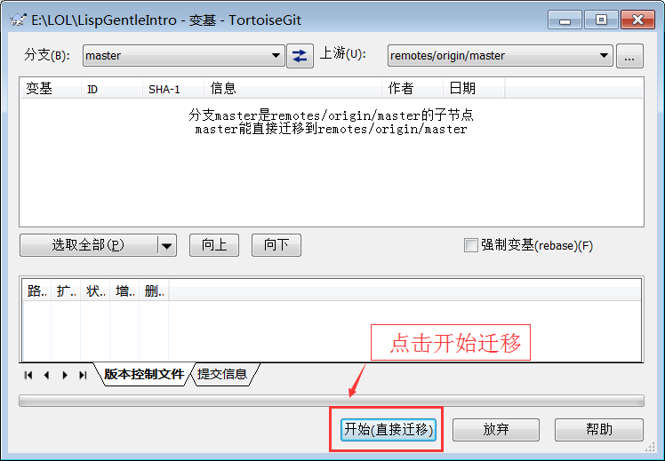
- 其他操作
- 暂存修改(Stash)
Git 提供了一个暂存修改的功能, 称为 Stash, 在一些程序进行了修改, 但还不 想 commit 成 revision
时, 就可以将这些修改 Stash 起来, 等到后面需要时再将它 们 Pop 出来.
- 忽略文件:一些编辑器在修改文件后会产生 bak 文件, 一般不希望这些备份文件也加入 库中, 可以选中一个.bak
文件, 然后选择 Add to ignore list 中的*.bak, 这样 bak 文 件以后就不会被 commit 了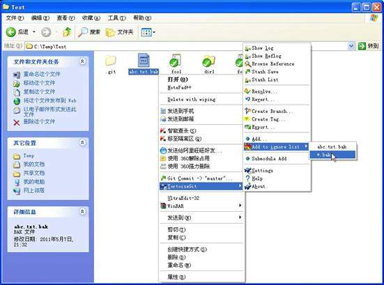
- 忽略空文件夹：通过在项目的目录中添加一个.gitignore 文件实现的, 因此也要 将.gitignore
加入忽略文件列表中.
注： 在Git中，默认是不会提交空目录的，如果想提交某个空目录到版本库中，需要在该目录下新建一个 .gitignore
的空白文件，就可以提交了
* 参考文章：http://www.cnblogs.com/wuchanming/p/5331957.html